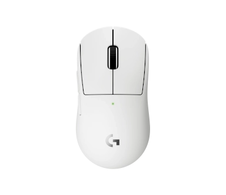
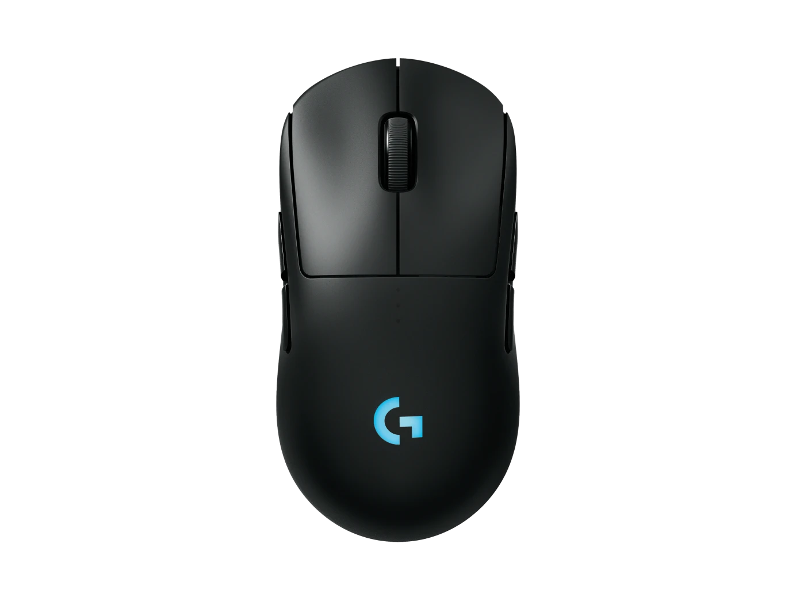
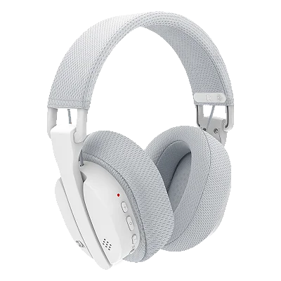
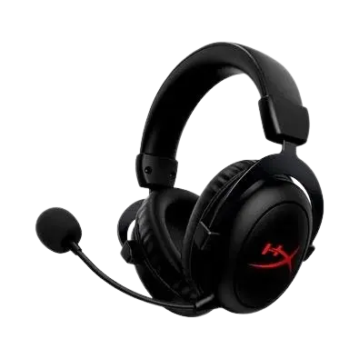
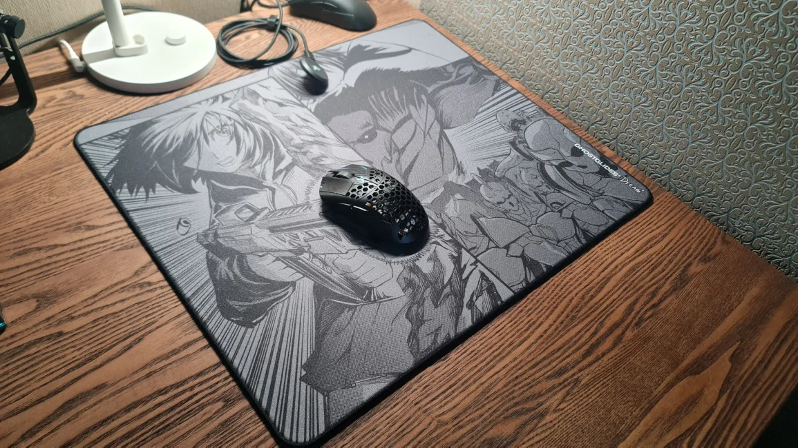
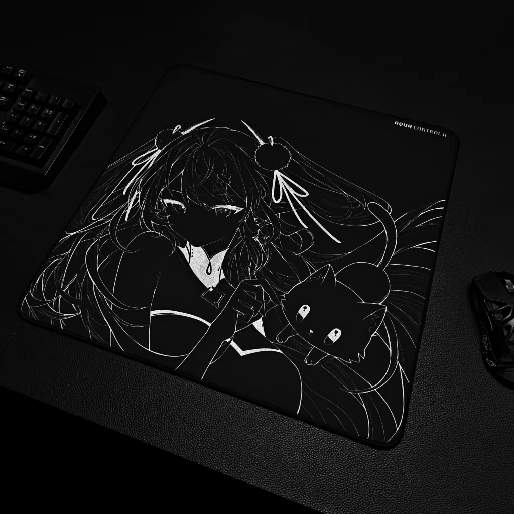

Sobre Nós
A loja do Eduardo é um espaço voltado totalmente para o universo gamer, pensado para quem busca qualidade, desempenho e estilo na hora de montar seu setup.
Ela oferece uma variedade de teclados mecânicos modernos, com ótima resposta ao toque, durabilidade e conforto, ideais para longas horas de uso.
Além disso, conta com mouses precisos e rápidos, desenvolvidos para melhorar a jogabilidade e dar mais controle em qualquer tipo de game, seja casual ou competitivo.
Os mouse pads também fazem parte do catálogo, trazendo superfícies confortáveis e estáveis que ajudam na precisão dos movimentos durante as partidas.
Cada produto é escolhido com cuidado para garantir uma experiência completa, unindo tecnologia, performance e visual moderno.
A loja do Eduardo é ideal para quem quer evoluir no jogo, melhorar o desempenho e montar um setup gamer completo e de qualidade.
Porque comprar com A gente?
Na loja do Eduardo, o foco é oferecer uma experiência completa para quem vive o mundo gamer e busca melhorar o desempenho dentro dos jogos. Trabalhamos com produtos selecionados com cuidado, garantindo qualidade, durabilidade e performance em cada item disponível.
Aqui você encontra teclados mecânicos com ótima resposta, mouses precisos que ajudam na velocidade e no controle, além de mouse pads desenvolvidos para oferecer mais estabilidade e conforto durante as partidas. Tudo é pensado para melhorar sua jogabilidade de forma real.
Outro diferencial é a variedade de produtos, que atende desde quem está começando no universo gamer até jogadores mais experientes que buscam montar um setup competitivo. Assim, cada cliente consegue encontrar exatamente o que precisa para seu estilo de jogo.
Também prezamos por um atendimento simples, direto e confiável, sempre buscando ajudar na melhor escolha para cada tipo de necessidade. A ideia é facilitar sua compra e garantir que você leve o produto certo para o seu setup.
Além disso, trabalhamos com preços justos e um compromisso sério com a satisfação do cliente, porque acreditamos que todo gamer merece qualidade sem complicação. Cada detalhe da loja é pensado para unir tecnologia, estilo e desempenho.
Produtos


fones



Mousepad


